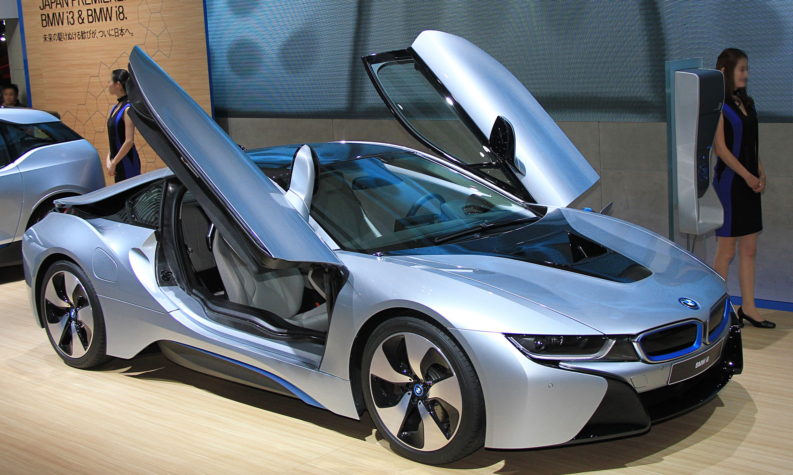

The BMW i8 is a plug-in hybrid sports car developed by BMW. The i8 is part of BMW's electric fleet "Project i" being marketed as a new sub-brand, BMW i. The 2015 model year BMW i8 has a 7.1 kWh lithium-ion battery pack that delivers an all-electric range of 37 km (23 mi) under the New European Driving Cycle. Under the United States Environmental Protection Agency cycle, the range in EV mode is 24 km (15 mi) with a small amount of gasoline consumption. Its design is heavily influenced by the BMW M1 Homage concept car, which in turn pays homage to BMW's last production mid-engined sports car prior to the i8: the BMW M1. BMW ceased production of the BMW i8 in April 2020.[10][11]